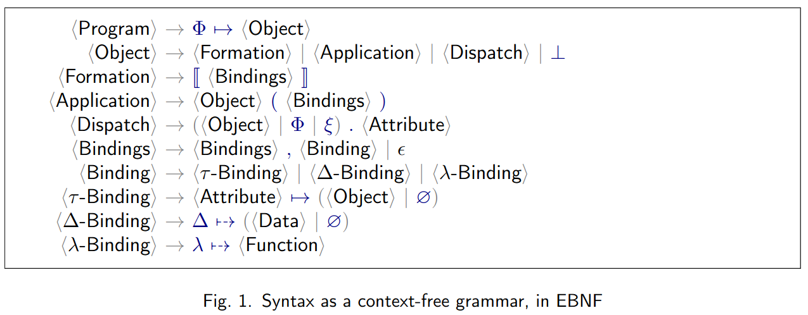

Normalizer for 𝜑-calculus
Command line normalizer of 𝜑-calculus (PHI) expressions (as produced by the EO compiler).
This project aims to apply term rewriting techniques to "simplify" an input PHI expression and prepare it for further optimization passes. The simplification procedure will be a form of partial evaluation and normalization (see normalizer transform).
Contrary to traditional normalization in λ-calculus, we aim at rewriting rules that would help reduce certain metrics of expressions (see normalizer metrics).
Installation
Install the normalizer executable globally via stack.
Then, the normalizer executable will be available on PATH.
Install from the repository
git clone https://github.com/objectionary/normalizer --recurse-submodules
cd normalizer
export LC_ALL=C.UTF-8
stack install normalizer
Install from Hackage
stack update
export LC_ALL=C.UTF-8
stack install --resolver lts-22.11 eo-phi-normalizer
Uninstall
Learn where stack installs programs.
stack path --programs
Learn how to uninstall a program.
stack uninstall
Commands
This section lists commands and options that you can use when you work with normalizer.
normalizer
See commands supported by the normalizer executable.
normalizer --help
Usage: normalizer COMMAND
Work with PHI expressions.
Available options:
-h,--help Show this help text
Available commands:
transform Transform a PHI program.
metrics Collect metrics for a PHI program.
dataize Dataize a PHI program.
normalizer transform
MetaPHI
You can define rewrite rules for the PHI language (the $\varphi$-calculus language) using YAML and the MetaPHI language that is a superset of PHI.
See the MetaPHI Labelled BNF in Syntax.cf.
phi-paper rules
Currently, the PHI normalizer supports rules defined in an unpublished paper by Yegor Bugayenko.

yegor.yaml
These rules translated to MetaPHI are in yegor.yaml.
Each rule has the following structure:
name- Rule name.description- Rule description.context- (optional) Rule context. A context may contain:global-object- (optional) Global objectMetaId.current-object- (optional) Current objectMetaId.
pattern- Term pattern.- When this term pattern matches a subterm of a
PHIterm,MetaIds from the term pattern become associated with matching subexpressions of that subterm.
- When this term pattern matches a subterm of a
result- Substitution result.MetaIds in the subterm pattern get replaced by their associated subexpressions.
when- A list of conditions for pattern matching.nf- A list ofMetaIds associated with subexpressions that shoud be in normal form.present_attrs- A list of attributes that must be present in subexpression bindings.attrs- A list of attributes. Can includeMetaIds.bindings- A list of bindings that must contain these attributes.
absent_attrs- A list of attributes that must not be present in subexpression bindings.attrs- A list of attributes. Can includeMetaIds.bindings- A list of bindings that must not contain these attributes.
tests- A list of unit tests for this rule.name- Test name.input- An initialPHIterm.output- The initialPHIterm after this rule was applied.matches- Whether the term pattern should match any subterm.
Normal form
An expression is in normal form when no rule can be applied to that expression.
Environment
Repository
The commands in the following sections access files that are available in the project repository. Clone and enter the repository directory.
git clone https://github.com/objectionary/normalizer --recurse-submodules
cd normalizer
Sample program
Save a PHI program to a file.
This program will be used in subsequent commands.
cat > program.phi <<EOM
{
⟦
a ↦
⟦
b ↦
⟦
c ↦ ∅,
d ↦ ⟦ φ ↦ ξ.ρ.c ⟧
⟧,
e ↦ ξ.b(c ↦ ⟦⟧).d
⟧
⟧
}
EOM
CLI
--help
normalizer transform --help
Usage: normalizer transform (-r|--rules FILE) [-c|--chain] [-j|--json]
[-o|--output-file FILE] [-s|--single]
[--max-depth INT] [--max-growth-factor INT] [FILE]
Transform a PHI program.
Available options:
-r,--rules FILE FILE with user-defined rules. Must be specified.
-c,--chain Output transformation steps.
-j,--json Output JSON.
-o,--output-file FILE Output to FILE. When this option is not specified,
output to stdout.
-s,--single Output a single expression.
--max-depth INT Maximum depth of rules application. Defaults to 10.
--max-growth-factor INT The factor by which to allow the input term to grow
before stopping. Defaults to 10.
FILE FILE to read input from. When no FILE is specified,
read from stdin.
-h,--help Show this help text
--rules
Normalize a 𝜑-expression from program.phi using the yegor.yaml rules.
There can be multiple numbered results that correspond to multiple rule application sequences.
normalizer transform --rules ./eo-phi-normalizer/test/eo/phi/rules/yegor.yaml program.phi
Rule set based on Yegor's draft
Input:
{ ⟦ a ↦ ⟦ b ↦ ⟦ c ↦ ∅, d ↦ ⟦ φ ↦ ξ.ρ.c ⟧ ⟧, e ↦ ξ.b (c ↦ ⟦ ⟧).d ⟧ ⟧ }
====================================================
Result 1 out of 1:
{ ⟦ a ↦ ⟦ b ↦ ⟦ c ↦ ∅, d ↦ ⟦ φ ↦ ξ.ρ.c ⟧ ⟧, e ↦ ξ.b (c ↦ ⟦ ⟧).d ⟧ ⟧ }
----------------------------------------------------
--chain
Use --chain to see numbered normalization steps for each normalization result.
normalizer transform --chain --rules ./eo-phi-normalizer/test/eo/phi/rules/yegor.yaml program.phi
Rule set based on Yegor's draft
Input:
{ ⟦ a ↦ ⟦ b ↦ ⟦ c ↦ ∅, d ↦ ⟦ φ ↦ ξ.ρ.c ⟧ ⟧, e ↦ ξ.b (c ↦ ⟦ ⟧).d ⟧ ⟧ }
====================================================
Result 1 out of 1:
[ 1 / 1 ]{ ⟦ a ↦ ⟦ b ↦ ⟦ c ↦ ∅, d ↦ ⟦ φ ↦ ξ.ρ.c ⟧ ⟧, e ↦ ξ.b (c ↦ ⟦ ⟧).d ⟧ ⟧ }
----------------------------------------------------
--json
normalizer transform --json --chain --rules ./eo-phi-normalizer/test/eo/phi/rules/yegor.yaml program.phi
{
"input": "{ ⟦ a ↦ ⟦ b ↦ ⟦ c ↦ ∅, d ↦ ⟦ φ ↦ ξ.ρ.c ⟧ ⟧, e ↦ ξ.b (c ↦ ⟦ ⟧).d ⟧ ⟧ }",
"output": [
["{ ⟦ a ↦ ⟦ b ↦ ⟦ c ↦ ∅, d ↦ ⟦ φ ↦ ξ.ρ.c ⟧ ⟧, e ↦ ξ.b (c ↦ ⟦ ⟧).d ⟧ ⟧ }"]
]
}
--single
normalizer transform --single --rules ./eo-phi-normalizer/test/eo/phi/rules/yegor.yaml program.phi
{ ⟦ a ↦ ⟦ b ↦ ⟦ c ↦ ∅, d ↦ ⟦ φ ↦ ξ.ρ.c ⟧ ⟧, e ↦ ξ.b (c ↦ ⟦ ⟧).d ⟧ ⟧ }
--single --json
normalizer transform --single --json --rules ./eo-phi-normalizer/test/eo/phi/rules/yegor.yaml program.phi
"{ ⟦ a ↦ ⟦ b ↦ ⟦ c ↦ ∅, d ↦ ⟦ φ ↦ ξ.ρ.c ⟧ ⟧, e ↦ ξ.b (c ↦ ⟦ ⟧).d ⟧ ⟧ }"
FILE not specified (read from stdin)
cat program.phi | normalizer transform --single --json --rules ./eo-phi-normalizer/test/eo/phi/rules/yegor.yaml
"{ ⟦ a ↦ ⟦ b ↦ ⟦ c ↦ ∅, d ↦ ⟦ φ ↦ ξ.ρ.c ⟧ ⟧, e ↦ ξ.b (c ↦ ⟦ ⟧).d ⟧ ⟧ }"
normalizer dataize
Dataization is the process through which data is extracted from a given program/object.
Dataization process
To dataize a given program written in $\varphi$-calculus, the first step is to normalize it according to the process outlined in normalize tranform docs.
Then, a single step of dataization is performed according to the following rules in order of priority:
- If the object is a formation that contains a $\Delta$-binding, the bytes attached to it are returned
- If the object is a formation that contains a $\lambda$-binding, the attached value is evaluated as a known built-in function and its result is returned. Currently, the following functions are supported:
TimesPlusPackage: this $\lambda$-binding is currently ignored (dataization proceeds as if it was not there) until proper support is added for specifying the path of the object to be dataized.
- If the object is a formation that contains a $\phi$-binding, the result becomes the dataization of its attached object
- If the object is an application, the object on which the bindings are applied is dataized and then the application is reapplied on its result. In other words, $\mathbb{D}\left(obj(a \mapsto b, ...)\right) = \mathbb{D}\left(obj\right)(a \mapsto b, ...)$
- If the object is a dispatch, the object on which the attribute is being dispatched is dataized and then the attribute is dispatched on its result. In other words, $\mathbb{D}\left(obj.\alpha\right) = \mathbb{D}\left(obj\right).\alpha$
The full dataization process is achieved by recursively normalizing and dataizing according to the rules above until bytes are reached or the object does not change (in which case the dataization is considered to have failed).
CLI
The examples in the following sections assume the existence a file celsius.phi with the following content:
{⟦
σ ↦ Φ,
c ↦ Φ.org.eolang.float(Δ ⤍ 19-), // 0x19 = 25
// The 02- should technically be 1.8 (or its float representation in bytes), but only integers are supported for now
φ ↦ ξ.c.times(α0 ↦ ⟦ Δ ⤍ 02- ⟧)
.plus(α0 ↦ ⟦ Δ ⤍ 20- ⟧), // 0x20 = 32
org ↦ ⟦
eolang ↦ ⟦
float ↦ ⟦
Δ ⤍ ∅,
times ↦ ⟦ α0 ↦ ∅, λ ⤍ Times ⟧,
plus ↦ ⟦ α0 ↦ ∅, λ ⤍ Plus ⟧
⟧
⟧
⟧
⟧}
Dataization is done using the dataize subcommand, and it supports the following arguments:
--help
normalizer dataize --help
Usage: normalizer dataize (-r|--rules FILE) [FILE] [-o|--output-file FILE]
[--recursive] [--chain]
Dataize a PHI program.
Available options:
-r,--rules FILE FILE with user-defined rules. Must be specified.
FILE FILE to read input from. When no FILE is specified,
read from stdin.
-o,--output-file FILE Output to FILE. When this option is not specified,
output to stdout.
--recursive Apply dataization + normalization recursively.
--chain Display all the intermediate steps.
-h,--help Show this help text
--rules
Similar to --rules for the transform subcommand, this argument accepts the path to a YAML file containing the rules to be used in the normalization phase.
--chain
If the --chain argument is passed, all the intermediate steps of normalization + dataization are printed to the console (or the output file if chosen).
normalizer dataize --chain --rules ./eo-phi-normalizer/test/eo/phi/rules/yegor.yaml celsius.phi
Normal form: ⟦ σ ↦ Φ, c ↦ Φ.org.eolang.float (Δ ⤍ 19-), φ ↦ ξ.c.times (α0 ↦ ⟦ Δ ⤍ 02- ⟧).plus (α0 ↦ ⟦ Δ ⤍ 20- ⟧), org ↦ ⟦ eolang ↦ ⟦ float ↦ ⟦ Δ ⤍ ∅, times ↦ ⟦ α0 ↦ ∅, λ ⤍ Times ⟧, plus ↦ ⟦ α0 ↦ ∅, λ ⤍ Plus ⟧ ⟧ ⟧ ⟧ ⟧
Dataizing inside phi: ξ.c.times (α0 ↦ ⟦ Δ ⤍ 02- ⟧).plus (α0 ↦ ⟦ Δ ⤍ 20- ⟧)
Dataizing inside application: ξ.c.times (α0 ↦ ⟦ Δ ⤍ 02- ⟧).plus
Dataizing inside dispatch: ξ.c.times (α0 ↦ ⟦ Δ ⤍ 02- ⟧) (α0 ↦ ⟦ Δ ⤍ 20- ⟧)
Dataizing inside application: ξ.c.times.plus (α0 ↦ ⟦ Δ ⤍ 20- ⟧)
Dataizing inside dispatch: ξ.c (α0 ↦ ⟦ Δ ⤍ 02- ⟧).plus (α0 ↦ ⟦ Δ ⤍ 20- ⟧)
Dataizing inside dispatch: ξ.times (α0 ↦ ⟦ Δ ⤍ 02- ⟧).plus (α0 ↦ ⟦ Δ ⤍ 20- ⟧)
Nothing to dataize: ξ.c.times (α0 ↦ ⟦ Δ ⤍ 02- ⟧).plus (α0 ↦ ⟦ Δ ⤍ 20- ⟧)
--output-file
Redirects the output to file of the given path instead of stdout.
--recursive
Applies the normalization+dataization process recursively until it reaches bytes or no longer modifies the object (stalls).
normalizer dataize --recursive --rules eo-phi-normalizer/test/eo/phi/rules/yegor.yaml celsius.phi
52-
Can be combined with --chain to print all the intermediate steps of both normalization and dataization.
FILE not specified (read from stdin)
If no argument is given for the input file, stdin is consumed until EOF.
cat celsius.phi | normalizer dataize --recursive --rules ./eo-phi-normalizer/test/eo/phi/rules/yegor.yaml
52-
normalizer metrics
Metrics
We count:
PHI grammar

Object formations
⟦ d ↦ ∅, c ↦ ∅ ⟧
Object applications
ξ.b(c ↦ ⟦ ⟧)
Dynamic dispatches
ξ.ρ.c
Dataless formations
Primitive formation- a formation that has aΔattribute.⟦ Δ ⤍ 00- ⟧
Dataless formation- not primitive and does not have attributes that map to primitive formations.⟦ d ↦ ⟦ φ ↦ ξ.ρ.c, ν ↦ ⟦ Δ ⤍ 00- ⟧ ⟧, c ↦ ∅ ⟧- the outermost formation with attributes
dandcis dataless because it is not primitive and its attributes do not map to primitive formations. dis not dataless because it has an attributeνthat maps to a primitive formation.
- the outermost formation with attributes
Environment
Save a PHI program to a file.
This program will be used in subsequent commands.
cat > program.phi <<EOM
{
⟦
a ↦
⟦
b ↦
⟦
c ↦ ∅,
d ↦ ⟦ φ ↦ ξ.ρ.c ⟧
⟧,
e ↦ ξ.b(c ↦ ⟦⟧).d
⟧
⟧
}
EOM
CLI
--help
normalizer metrics --help
Usage: normalizer metrics [FILE] [-o|--output-file FILE]
[-b|--bindings-by-path PATH]
Collect metrics for a PHI program.
Available options:
FILE FILE to read input from. When no FILE is specified,
read from stdin.
-o,--output-file FILE Output to FILE. When this option is not specified,
output to stdout.
-b,--bindings-by-path PATH
Report metrics for bindings of a formation accessible
in a program by a PATH. The default PATH is empty.
Example of a PATH: 'org.eolang'.
-h,--help Show this help text
FILE
normalizer metrics program.phi
{
"bindingsByPathMetrics": {
"bindingsMetrics": [
{
"metrics": {
"applications": 1,
"dataless": 1,
"dispatches": 4,
"formations": 4
},
"name": "a"
}
],
"path": []
},
"programMetrics": {
"applications": 1,
"dataless": 1,
"dispatches": 4,
"formations": 5
}
}
FILE not specified (read from stdin)
cat program.phi | normalizer metrics
{
"bindingsByPathMetrics": {
"bindingsMetrics": [
{
"metrics": {
"applications": 1,
"dataless": 1,
"dispatches": 4,
"formations": 4
},
"name": "a"
}
],
"path": []
},
"programMetrics": {
"applications": 1,
"dataless": 1,
"dispatches": 4,
"formations": 5
}
}
--bindings-by-path
normalizer metrics --bindings-by-path "a" program.phi
{
"bindingsByPathMetrics": {
"bindingsMetrics": [
{
"metrics": {
"applications": 0,
"dataless": 0,
"dispatches": 2,
"formations": 2
},
"name": "b"
},
{
"metrics": {
"applications": 1,
"dataless": 1,
"dispatches": 2,
"formations": 1
},
"name": "e"
}
],
"path": [
"a"
]
},
"programMetrics": {
"applications": 1,
"dataless": 1,
"dispatches": 4,
"formations": 5
}
}
normalizer report
Reports
The report command generates reports about initial and normalized PHI programs.
The reports contain detailed information about metrics collected for these programs.
The reports are in HTML, GitHub Flavored Markdown, and JSON formats.
Environment
The command requires that there are:
- Initial
PHIprograms - Normalized
PHIprograms - A report configuration file
PHI programs
Currently, we translate EO programs and get initial PHI programs.
Next, we normalize these PHI programs and get normalized PHI programs.
Report configuration file
The report configuration file has several attributes:
inputjs- Optional path to aJavaScriptfile that should be inlined into anHTMLreport.- If no path is specified,
normalizerwill usereport/main.jsfrom theeo-phi-normalizerpackage.
- If no path is specified,
css- Optional path to aCSSfile that should be inlined into anHTMLreport.- If no path is specified,
normalizerwill usereport/styles.cssfrom theeo-phi-normalizerpackage.
- If no path is specified,
outputhtml- Optional path to anHTMLreport.- If no path is specified, the
HTMLreport won't be generated.
- If no path is specified, the
json- Optional path to aJSONreport.- If no path is specified, the
JSONreport won't be generated.
- If no path is specified, the
markdown- Optional path to aGitHub Flavored Markdownreport.- If no path is specified, the
GitHub Flavored Markdownreport won't be generated.
- If no path is specified, the
expected-metrics-change- Specifies expected changes of metrics for normalizedPHIprograms relative to the initialPHIprograms. Values represent(metric_initial - metric_normalized) / metric_ initial. Attributes:datalessapplicationsformationsdispatches
itemsphi- path to an initialPHIprogram.phi-normalized- path to a normalizedPHIprogram.- The normalized
PHIprogram should correspond to the initialPHIprogram.
- The normalized
bindings-path-phi- path to bindings of a formation in the initialPHIprogram.org.eolangcorresponds to a formationΦ.org.eolang.
bindings-path-phi-normalized- path to bindings of a formation in the normalizedPHIprogram.org.eolangcorresponds to a formationΦ.org.eolang.
Sample report configuration file
The normalizer repository contains the report/config.yaml report configuration file.
Click to view the file
output:
html: report/report.html
json: report/report.json
markdown: report/report.md
expected-metrics-change:
dataless: 0.2
applications: 0.2
formations: 0.1
dispatches: 0.2
items:
- phi: pipeline/phi/as-phi-tests.phi
phi-normalized: pipeline/phi-normalized/as-phi-tests.phi
bindings-path-phi: org.eolang
bindings-path-phi-normalized: org.eolang
- phi: pipeline/phi/bytes-tests.phi
phi-normalized: pipeline/phi-normalized/bytes-tests.phi
bindings-path-phi: org.eolang
bindings-path-phi-normalized: org.eolang
- phi: pipeline/phi/cage-tests.phi
phi-normalized: pipeline/phi-normalized/cage-tests.phi
bindings-path-phi: org.eolang
bindings-path-phi-normalized: org.eolang
- phi: pipeline/phi/cti-test.phi
phi-normalized: pipeline/phi-normalized/cti-test.phi
bindings-path-phi: org.eolang
bindings-path-phi-normalized: org.eolang
- phi: pipeline/phi/float-tests.phi
phi-normalized: pipeline/phi-normalized/float-tests.phi
bindings-path-phi: org.eolang
bindings-path-phi-normalized: org.eolang
- phi: pipeline/phi/goto-tests.phi
phi-normalized: pipeline/phi-normalized/goto-tests.phi
bindings-path-phi: org.eolang
bindings-path-phi-normalized: org.eolang
- phi: pipeline/phi/heap-tests.phi
phi-normalized: pipeline/phi-normalized/heap-tests.phi
bindings-path-phi: org.eolang
bindings-path-phi-normalized: org.eolang
- phi: pipeline/phi/int-tests.phi
phi-normalized: pipeline/phi-normalized/int-tests.phi
bindings-path-phi: org.eolang
bindings-path-phi-normalized: org.eolang
- phi: pipeline/phi/memory-tests.phi
phi-normalized: pipeline/phi-normalized/memory-tests.phi
bindings-path-phi: org.eolang
bindings-path-phi-normalized: org.eolang
- phi: pipeline/phi/nan-tests.phi
phi-normalized: pipeline/phi-normalized/nan-tests.phi
bindings-path-phi: org.eolang
bindings-path-phi-normalized: org.eolang
- phi: pipeline/phi/negative-infinity-tests.phi
phi-normalized: pipeline/phi-normalized/negative-infinity-tests.phi
bindings-path-phi: org.eolang
bindings-path-phi-normalized: org.eolang
- phi: pipeline/phi/nop-tests.phi
phi-normalized: pipeline/phi-normalized/nop-tests.phi
bindings-path-phi: org.eolang
bindings-path-phi-normalized: org.eolang
- phi: pipeline/phi/positive-infinity-tests.phi
phi-normalized: pipeline/phi-normalized/positive-infinity-tests.phi
bindings-path-phi: org.eolang
bindings-path-phi-normalized: org.eolang
- phi: pipeline/phi/ram-tests.phi
phi-normalized: pipeline/phi-normalized/ram-tests.phi
bindings-path-phi: org.eolang
bindings-path-phi-normalized: org.eolang
- phi: pipeline/phi/runtime-tests.phi
phi-normalized: pipeline/phi-normalized/runtime-tests.phi
bindings-path-phi: org.eolang
bindings-path-phi-normalized: org.eolang
- phi: pipeline/phi/seq-tests.phi
phi-normalized: pipeline/phi-normalized/seq-tests.phi
bindings-path-phi: org.eolang
bindings-path-phi-normalized: org.eolang
- phi: pipeline/phi/string-tests.phi
phi-normalized: pipeline/phi-normalized/string-tests.phi
bindings-path-phi: org.eolang
bindings-path-phi-normalized: org.eolang
- phi: pipeline/phi/switch-tests.phi
phi-normalized: pipeline/phi-normalized/switch-tests.phi
bindings-path-phi: org.eolang
bindings-path-phi-normalized: org.eolang
- phi: pipeline/phi/try-tests.phi
phi-normalized: pipeline/phi-normalized/try-tests.phi
bindings-path-phi: org.eolang
bindings-path-phi-normalized: org.eolang
- phi: pipeline/phi/tuple-tests.phi
phi-normalized: pipeline/phi-normalized/tuple-tests.phi
bindings-path-phi: org.eolang
bindings-path-phi-normalized: org.eolang
- phi: pipeline/phi/unit-tests.phi
phi-normalized: pipeline/phi-normalized/unit-tests.phi
bindings-path-phi: org.eolang
bindings-path-phi-normalized: org.eolang
CLI
--help
normalizer report --help
Usage: normalizer report (-c|--config FILE)
Generate reports about initial and normalized PHI programs.
Available options:
-c,--config FILE The FILE with a report configuration.
-h,--help Show this help text
--config
Generate reports using a configuration file report/config.yaml.
normalizer report --config report/config.yaml
ls report/report*
report/report.html
report/report.json
report/report.md
Contributing
We recommend using stack for quick local development and testing.
Clone this project and run stack build.
git clone https://github.com/objectionary/normalizer --recurse-submodules
cd normalizer
stack build
Run
Run the executable via stack run.
stack run normalizer -- --help
Usage: normalizer COMMAND
Work with PHI expressions.
Available options:
-h,--help Show this help text
Available commands:
transform Transform a PHI program.
metrics Collect metrics for a PHI program.
Or, omit the executable name.
stack run -- --help
Usage: normalizer COMMAND
Work with PHI expressions.
Available options:
-h,--help Show this help text
Available commands:
transform Transform a PHI program.
metrics Collect metrics for a PHI program.
Test
Run all tests
stack test
Contribute
Math expressions
Use the syntax supported by mdBook - see docs.
pre-commit
We use pre-commit to ensure code quality.
Collaborators MUST set them up before commiting any code to our repository.
Otherwise, the triggered CI jobs will fail.
Set up pre-commit
Single command
pip3 install
pre-commit install
stack install fourmolu
chmod +x scripts/run-fourmolu.sh
Step by step
-
Install Python 3 (e.g., Python 3.10).
-
- Alternatively, run
pip3 install.
- Alternatively, run
-
Install fourmolu.
stack install fourmolu- You can remove
fourmolulater (see SO post)
- You can remove
-
Make a script executable.
chmod +x scripts/run-fourmolu.sh
pre-commit configs
See docs.
You can run a specific hook (see docs):
pre-commit run -c .pre-commit-config.yaml fourmolu-format --all
pre-commit workflow
-
pre-commitruns before a commit (at the pre-commit phase)The pre-commit hook is run first, before you even type in a commit message. It's used to inspect the snapshot that's about to be committed, to see if you've forgotten something, to make sure tests run, or to examine whatever you need to inspect in the code. Exiting non-zero from this hook aborts the commit ...
-
pre-commitstashes (link) unstaged (link) files.[WARNING] Unstaged files detected. [INFO] Stashing unstaged files to /home/eyjafjallajokull/.cache/pre-commit/patch1705090051-437857. -
pre-commitruns hooks. -
A hook may exit with an error, e.g.:
Format Haskell (.hs) files...............................................Failed - hook id: fourmolu - exit code: 102 - files were modified by this hook- In case of the fourmolu formatter,
it's assumed that formatting a formatted
Haskellfile doesn't modify it. However,pre-commitruns thefourmoluhook and reports that it has modified some files. This error won't allow you to commit.
- In case of the fourmolu formatter,
it's assumed that formatting a formatted
-
pre-commitunstashes files. -
You should stage all changes so that
pre-commitdoes not complain.- In case of
fourmolu, stage the formatted code regions.
- In case of
-
Now, you can commit.